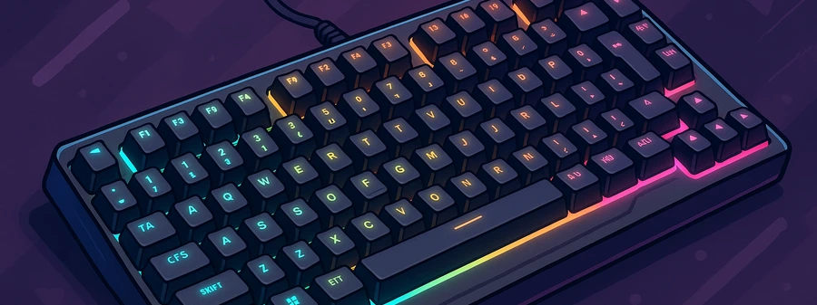

Mejores Teclados Gaming 2025 | Opiniones Reales | Actualizado Abril 2025
Hola, soy Carlos. Llevo más de 15 años trabajando como analista de productos tecnológicos, especializado en periféricos para gaming y productividad. A lo largo de mi trayectoria he probado cientos de teclados, y en este artículo quiero compartirte mis opiniones personales basadas en la experiencia real de uso, para que tomes la mejor decisión de compra.
Índice de Contenidos
- ¿Qué es un teclado gaming?
- ¿Por qué deberías comprar un teclado gaming?
- Comparativa de los mejores modelos
- ¿Cuál compraría yo?
- Preguntas frecuentes
¿Qué es un Teclado Gaming?
Un teclado gaming no es simplemente un teclado con luces. Se trata de dispositivos diseñados pensando en la precisión, la velocidad de respuesta y la resistencia. Cuando estás en medio de una partida, cada milisegundo cuenta, y un buen teclado puede ser la diferencia entre ganar o perder. Como gamer y analista, valoro mucho que un teclado gaming responda de forma rápida, cómoda y fiable.
¿Por Qué Deberías Comprar uno?
- Mayor velocidad de respuesta: en juegos de alta competición, tener un teclado con switches rápidos marca la diferencia.
- Durabilidad garantizada: he probado teclados gaming que aguantan millones de pulsaciones sin fallar.
- Mejor ergonomía: para sesiones largas, un teclado bien diseñado reduce la fatiga.
- Personalización y estética: no solo funcionalidad, también aportan estilo único a tu setup.
- Funcionalidades extra: teclas macro, perfiles de usuario y conexión inalámbrica avanzada.
Comparativa de los mejores modelos
Logitech G413 SE Full-Size
Tras probar el Logitech G413 SE Full-Size, me sorprendió su robustez y el excelente acabado de su chasis de aluminio. La pulsación es precisa, ideal tanto para gaming como para trabajar horas escribiendo.
Principales características:- Estructura de aluminio de alta calidad
- Pulsaciones mecánicas muy nítidas
- Diseño sobrio y profesional
Logitech G413 TKL SE

El Logitech G413 TKL SE me resultó muy cómodo para gaming competitivo. Al ser compacto, permite una posición mucho más natural del ratón, y su tacto mecánico sigue siendo preciso y satisfactorio.
Principales características:- Formato TKL (sin teclado numérico) perfecto para gaming
- Materiales premium y duraderos
- Pulsaciones firmes y agradables
Logitech G213 Prodigy

El Logitech G213 Prodigy destaca por su comodidad: el reposamuñecas integrado es una delicia para sesiones largas. Su iluminación RGB es vibrante y su respuesta de teclas es buena para gaming casual y diario.
Principales características:- Retroiluminación RGB por zonas configurable
- Resistente a salpicaduras
- Excelente comodidad ergonómica
Corsair K55 RGB PRO
El Corsair K55 RGB PRO me sorprendió muy positivamente: su respuesta es muy rápida pese a ser de membrana. Su iluminación RGB por zonas y su resistencia a salpicaduras lo convierten en una opción muy equilibrada.
Principales características:- Gran calidad de construcción
- Iluminación RGB espectacular
- Resistente a líquidos y polvo
Razer BlackWidow V3 Tenkeyless
El Razer BlackWidow V3 Tenkeyless ofrece una experiencia de gaming de primer nivel: switches mecánicos Green muy satisfactorios, estructura robusta y un tamaño compacto perfecto para escritorios reducidos.
Principales características:- Switches mecánicos Green de respuesta táctil
- Tamaño compacto sin perder funcionalidad
- Iluminación RGB individual por tecla
¿Cuál compraría yo?
Después de haber probado todos estos teclados, personalmente me quedaría con el Razer BlackWidow V3 Tenkeyless. Su tacto mecánico es simplemente espectacular gracias a los switches Green de Razer, la respuesta táctil es inmediata y muy satisfactoria para gaming competitivo. Además, su tamaño compacto libera mucho espacio en el escritorio sin sacrificar la calidad de construcción ni la experiencia de escritura. La iluminación RGB individual por tecla también añade un plus de personalización que marca la diferencia.
Ver en AmazonPreguntas Frecuentes (FAQ)
¿Vale la pena invertir en un teclado gaming caro?
Sí, si eres un usuario intensivo o gamer competitivo. Los teclados de gama alta ofrecen mejor durabilidad, personalización y experiencia de uso.
¿Qué diferencia hay entre un teclado mecánico y uno de membrana?
El mecánico tiene interruptores individuales en cada tecla, ofreciendo mejor respuesta y vida útil más larga. El de membrana es más barato pero menos preciso.
¿Son buenos los teclados inalámbricos para gaming?
Hoy en día sí, gracias a tecnologías como Bluetooth 5.0 o conexiones propietarias de alta velocidad como Lightspeed de Logitech.